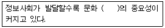

전자출판기능사 (2006-04-02 기출문제)
1과목: 출판론
1. PS판의 특징에 대한 설명 중 틀린 것은?
- 제판 공정이 간단하다.
- 온도, 습도에 대해서 안전하다.
- 암반응 및 잔반응이 잘 일어난다.
- 다른 판에 비해 장기간 보관이 용이하다.
(정답률: 67%)

2. 팝업 북에 대하여 가장 바르게 설명한 것은?
- 책을 펼치면 그림이 나오거나 입체가 완성되도록 제책한 책
- 비닐로 책의표지를 만들어 제책한 책
- 구멍을 뚫어 바인더에 끼워서 제책한 책
- 책의 표지와 내지에 네모난 구멍을 촘촘히 뚫어 링을 구멍에 넣고 프레스로 눌러 마무리 제책한 책
(정답률: 91%)
3. 제책시 접장이나 낱장을 순서에 따라 모으는 작업을 무엇이라 하는가?
- 접지
- 재단
- 장합(정합)
- 제지
(정답률: 74%)
4. 일반적으로 인쇄의 4방식 중 습수 롤러를 주로 사용하는 방식은?
- 볼록판 인쇄
- 오목판 인쇄
- 평판 인쇄
- 공판 인쇄
(정답률: 78%)
5. 플렉소 인쇄방식에서 판에 잉크를 묻히는 장치에 해당하는 것은?
- 스퀴지(Squeegee)
- 아닐록스 롤러(Anilox foller)
- 텐션 롤러(Tension roller)
- 잉크 이김 롤러(Ink distributing roller)
(정답률: 49%)
6. 종이책과 비교하여 전자출판물의 특성이 아닌 것은?
- 정보의 공유력이 우수하다.
- 타 매체와의 적응력이 우수하다.
- 플레이어와 전원이 전혀 필요 없다.
- 소리, 그림, 영상 등의 복합적 표현이 가능하다.
(정답률: 83%)
7. 서점은 완성된 출판물을 독자에게 연결해 주는 판매장소이다. 체계적이고 효율적인 판매 증대를 위한 출판 경영 활동과 가장 거리가 먼 것은?
- 복잡하고 불안정한 도서유통 체계의 개선
- 위탁 판매제에 따른 과중한 반품의 최소화
- 서점의 부족한 관리업무 보완
- 어려운 상품의 배제
(정답률: 72%)
8. 다음 중 출판 행위의 3주체(출판문화의 형성자)라고 할 수 없는 것은?
- 출판사(출판자)
- 저자
- 도서관
- 독자
(정답률: 93%)
9. 특정 출판물에 대한 판매 속도 및 판매량의 정도로 본 보급성향별 유형에 포함되지 않는 것은?
- 패스트 셀러(fast seller)형
- 스테디 셀러(steady seller)형
- 베스트 셀러(best seller)형
- 석세스 셀러(success seller)형
(정답률: 86%)
10. 먼셀의 5주요 색상이 아닌 것은?
- Red
- Yellow
- Purple
- Black
(정답률: 66%)
11. 주어진 환경 아래에서 앞으로 나올 책의 편집, 생산, 보급, 광고 등에 대한 세부적 지침을 정하는 일은?
- 제작 진행
- 원고 청탁
- 출판 기획
- 출판 계약
(정답률: 74%)
12. 평판 다색 인쇄에서 각 판의 스크린 각도 불량으로 주로 발생하는 문제점은?
- 색바램
- 뉴튼링
- 유화
- 무아레
(정답률: 83%)
13. 빨강색이 회색 바탕 위에서는 선명하게 보이고, 주황색 바탕에서는 흐리게 보이는 현상과 가장 관련 있는 것은?
- 보색 대비
- 면적 대비
- 명도 대비
- 채도 대비
(정답률: 71%)
14. 와이프 온(wipe-on)판의 특징으로 맞지 않는 것은?
- 감광액 도포기가 없어도 된다.
- 작업공정이 매우 복잡하다.
- 판을 한 공정에서 현상과 래커 칠까지 한다.
- 제판 설비가 간단하다.
(정답률: 58%)
15. 제책시 책의 표면 가공 목적과 가장 관계가 없는 것은?
- 잉크 퇴색의 방지
- 원가 절감의 효과
- 내약품성 증대
- 인쇄 지면의 광택 내기
(정답률: 87%)
16. 어떤 색의 먼셀기호가 5Y 8/13.5 라면 명도를 나타내는 것은?
- 5
- 8
- 5Y
- 13.5
(정답률: 76%)
17. 다음 중 서로 가장 보색 관계에 있는 것은?
- 연두(GY)-파랑(B)
- 노랑(Y)-녹색(G)
- 보라(P)-파랑(B)
- 빨강(R)-청록(BG)
(정답률: 71%)
18. 출판물 유통에서 판매 시점 관리를 의미하는 용어는?
- ISBN
- ISSN
- KDC
- POS
(정답률: 84%)
19. 감법혼색에서 3원색의 혼합방법으로 틀린 것은?
- Magenta+Blue=Cyan
- Yellow+Cyan=Green
- Yellow+Magenta=Red
- Magenta+Cyan=Blue
(정답률: 54%)
20. ISBN 89-338-5003-1 이라는 표기가 있다면 이 아라비아 숫자 10자리의 순서에 대한 설명으로 맞는 것은?
- 국별번호-발행자번호-도서식별번호-체크번호
- 발행자번호-국별번호-체크번호-도서식별번호
- 체크번호-도서식별번호-발행자번호-국별번호
- 도서식별번호-체크번호-국별번호-발행자번호
(정답률: 79%)
2과목: 전자 출판
21. 다음 중 DTP 시스템을 사용한 작업흐름으로 가장 알맞은 것은?
- 입력장치→출력장치→연산장치→인쇄
- 입력장치→연산장치→인쇄→출력장치
- 연산장치→입력장치→출력장치→인쇄
- 입력장치→연산장치→출력장치→인쇄
(정답률: 79%)
22. 제시된 정보에서 특정한 단어를 검색하여 필요한 정보를 비선형적으로 얻을 수 있도록 구성된 전자 출판 출판의 형태와 가장 관계가 깊은 것은?
- 하이퍼링크(hyper link)
- 미디어 클립(media clip)
- 비주얼라이저(visualizer)
- 디스크 서버(disk server)
(정답률: 67%)
23. 아크로뱃(Acrobat)에서 사용되는 파일 포맷으로서 이 포맷으로 지정된 파일은 색상, 그림, 글꼴 등 종이출판물의 형태를 그대로 인터넷상에서 보여주기 때문에 전자출판물에서 많이 활용되는 저장 형식은?
- HTML
- SGML
- JepaX v1.0
(정답률: 91%)
24. 다음 ( )안에 들어갈 ‘저작물의 내용’을 뜻하는 용어로 가장 적합한 것은?

- 웹진
- 콘텐츠
- 저작권
- 지적재산권
(정답률: 64%)
25. 전자출판의 요건으로 가장 거리가 먼 것은?
- 검색기능이 있어야 한다.
- 디지털화된 데이터로 저장되어 있어야 한다.
- 독자들이 내용을 변경하여 재 저장할 수 없어야 한다.
- 등록되지 않은 출판사에서 발행이 가능하다.
(정답률: 64%)
26. 하이퍼링크의 구성요소를 3가지 부분으로 나눌 때 가장 거리가 먼 것은?
- 인터페이스
- 동영상
- 노드와 링크
- 정보
(정답률: 71%)
27. 종이책의 가장 큰 장점은?
- 보조기구 없이 독서하기가 용이하고 휴대가 편리
- 정보의 공유성이 강하고 타 매체에 대한 적응력 우수
- 신속한 정보 제공과 정보의 수정이 용이
- 문자, 그림의 표현, 장기보관, 검색성이 우수
(정답률: 78%)
28. 전자출판물의 인터페이스를 설계할 때 참고할 사항이 아닌 것은?
- 복잡한 구조로 독자의 흥미를 끌 수 있어야 한다.
- 상호적용성을 고려하여 설계한다.
- 용량을 고려하여 설계한다.
- 메뉴나 아이콘 실행 방식은 일관성 잇게 설계한다.
(정답률: 90%)
29. POD(Print On Demand) 출판의 가장 적합한 뜻은?
- 소량 출판
- 소량 인쇄
- 주문형 출판
- 주문형 판매
(정답률: 71%)
30. 편집된 문자나 이미지의 포스트스크립트 데이터를 필름이나 인화지에 출력하기 위해 픽셀 요소로 바꾸어 주는 변환기를 무엇이라 하는가?
- OPI
- SCSI
- ROP
- OPP
(정답률: 48%)
31. 텍스트, 이미지, 동영상, 음성파일 등에 특정한 코드값을 붙여 불법 복제를 추적할 수 있도록 한 디지털 문서 식별자 체제는?
- Book Mark
- Tag
- DOI
- ISBN
(정답률: 72%)
32. 전자출판물 정보 구조에 있어서 가장 간단하고 손쉽게 이해할 수 있는 링크 구조로서 연대별, 시간별, 논리적 흐름 등을 제시하고자 할 때 가장 적합한 것은?
- 순차적 링크
- 계층적 링크
- 격자형 링크
- 구조적 링크
(정답률: 72%)
33. 다음 중 전자출판물의 특징을 설명한 것으로 틀린 것은?
- 많은 용량을 수록할 수 있다
- 저작권 보호 문제가 아주 쉽게 해결된다.
- 재편집이나 가공이 용이하다.
- 멀티미디어 기능이 있다.
(정답률: 88%)
34. 다음 중 종이책 출판을 목적으로 하는 경우는?
- WEBZINE
- CD-Ⅰ
- e-book
- DTP
(정답률: 92%)
35. 다음 중 가장 넓은 범위의 기능을 정의하는 전산편집 관련 용어는?
- EP(전자출판)
- DTP(탁상출판)
- CAE(전산편집)
- CTS(전산식자)
(정답률: 60%)
36. 스토리 보드를 작성하는 것은 다음 단계 중 어디에 해당되는가?
- 준비단계
- 설계단계
- 저작 단계
- 상품화단계
(정답률: 70%)
37. 전자출판물에서 내용을 화면단위로 제시한 것으로 각 화면이 어떻게 구성되고 어떻게 흘러갈 것인지를 모두 기록해 놓은 것을 무엇이라 하는가?
- 인터페이스
- 텍스트
- 스토리 보드
- 스크립트
(정답률: 84%)
38. 전자출판물(CD-ROM) 제작 과정은 기획단계와 개발단계로 나눠지는데 이 중 기획단계의 작업 절차로 보기 어려운 것은?
- 제작 타당성 검토
- 프로그래밍
- 제작진 구성
- 제작 일정 확정
(정답률: 63%)
39. 메모리의 종류에는 여러 가지가 있다. 그 중에서 단지 읽기만 가능한 기억저장 장치로서 전원이 끊어져도 내용이 유실되지 않고 그대로 유지되는 것은?
- RAM
- ROM
- CPU
- FDD
(정답률: 80%)
40. 립(RIP)에서 만들어진 비트맵 이미지를 레이저 광선을 이용하여 필름에서 원하는 형태의 이미지로 정확하게 나타내는 것은?
- 이미지 세터
- CTP 작업
- 스캐너
- OPI
(정답률: 56%)
3과목: 전산 편집
41. 다색 원고에 대한 설명 중 옳은 것은?
- 다색 원고는 보통 1색에서 4색까지를 의미한다.
- 보통 4색까지는 기본 가격이고, 1색 추가시마다 제판비가 올라간다.
- 보통 4원색으로 인쇄를 하기 N이해서는 컬러 스캐너로 사진 원고를 원색분해 하기도 한다.
- 컴퓨터 모니터에서 보는 RGB라는 빛의 3원색을 인쇄할 때 인쇄용의 RGB 모드로 출력해야 한다.
(정답률: 41%)
42. 인쇄물 지면 편집에서 독자의 시선을 끄는 가장 중요한 요소는?
- 여백
- 사진 또는 그림
- 자간
- 쪽수
(정답률: 90%)
43. 정가 판매제를 가장 옳게 설명한 것은?
- 도매서점이 최종 소비자 가격을 정하는 제도
- 소비자(독자)가 최종 소비자 가격을 정하는 제도
- 출판사가 최종 소비자 가격을 정하는 제도
- 국가가 소비자보호원과 협의하여 최종 소비자 가격을 정하는 제도
(정답률: 64%)
44. 색농도 조정 방식을 퍼센트(%) 방식과 별색 방식으로 나눌 때 별색 방식의 장점은?
- 4원색 이미지 이외의 곳에 색 농도를 별색 방식으로 지정하면 인쇄비를 절감할 수 있다.
- 인쇄 정밀도는 떨어지고 정확한 농도의 스크린 톤을 사용하지 못하므로 정확한 색상을 내기 어렵다.
- 처음부터 색을 혼합하여 단색처럼 인쇄하므로 인쇄가 깨끗하고 정밀하다.
- 인쇄기사가 눈대중으로 색을 섞어 재현하므로 원하는 정확한 색상을 얻기가 쉽다.
(정답률: 73%)
45. 사진 트리밍의 요령으로 볼 수 없는 것은?
- 국가, 산업, 군사 기밀사항 및 개인 신상 표현에 유의해야 한다.
- 3분법과 10분법을 적용한다.
- 주제 이외의 부분들도 최대한 활용한다.
- 시선의 흐름에 유의한다.
(정답률: 57%)
46. 단어와 단어 사이의 간격을 무엇이라 하는가?
- 자간
- 어간
- 행간
- 행송
(정답률: 80%)
47. 잡지의 기능으로 가장 거리가 먼 것은?
- 독자에게 전문화된 정보를 제공한다.
- 광고주에게 광고와 판촉의 기회를 제공한다.
- 문화 형성의 기능을 수행한다.
- 신속한 정보를 제공한다.
(정답률: 70%)
48. 다음 중 성인을 대상으로 하는 단행본이나 잡지의 본문에 많이 사용되고 있으며, 가장 읽기 쉽고 안정감을 주는 문자의 크기는?
- 6.5포인트
- 7.5포인트
- 10.5포인트
- 16.5포인트
(정답률: 83%)
49. 교열에 대한 설명 중 옳은 것은?
- 주로 필름출력이 완성되어 교정 인쇄한 후 원고와 비교 정정하는 것이다.
- 단어의 의미보다는 오자, 탈자만을 주로 바로잡는 것이다.
- 편집자가 저술자의 의도를 바꾸지 않고 문장의 의미를 정확히 이해할 수 있도록 고치는 것이다.
- 문장의 내용을 정확하게 파악하지 않아도 충분히 작업을 할 수가 있다.
(정답률: 56%)
50. 다음 설명 중 틀린 내용은?
- 사진 또는 그림을 설명한 문장을 캡션이라고 한다.
- 본문의 주목효과를 높이기 위해 첫 글자를 크게 하는 것을 이니셜이라고 한다.
- 일러스트레이션은 특정 부분의 생략과 과장이 가능하다.
- 사진을 축소하는 것을 파일링, 사진을 확대하는 것을 트리밍이라 한다.
(정답률: 74%)
51. 편집기획 회의에서 결정된 내용과 제작 KQD법을 정한 뒤 페이지 순서대로 제목이나 내용 요약을 적어 놓은 것을 무엇이라 하는가?
- 편집 배열표
- 레이아웃표
- 일러스트레이션
- 편집기획서
(정답률: 63%)
52. 단행본을 처음 발행하였을 때 판권지에 표기하는 방법으로 가장 올바른 것은?
- 초판 2쇄 발행
- 초판 1쇄
- 1쇄 2판
- 인쇄 발행
(정답률: 80%)
53. 지면구성에 대한 설명으로 가장 거리가 먼 내용은?
- 단행본 책은 대체로 1단으로 구성되어 있다.
- 판형이 큰 출판물일수록 단수가 늘어난다.
- 제목글씨는 반드시 명조체를 사용해야 한다.
- 잡지는 지면구성에 있어서 변화를 주는 것이 좋다.
(정답률: 78%)
54. 제판 인쇄시 색상 표현의 문제점으로 틀린 것은?
- 종이의 종류에 따라 색조가 다르게 표현된다.
- 잉크가 일정하게 공급되지 못하면 얼룩이 생긴다.
- 원색 분해과정에서 컬러는 작업자가 절대로 조절할 수 없다.
- 지극히 엷은 색조를 표현하려면 가급적 별색 잉크로 추가 인쇄하는 것이 좋다.
(정답률: 79%)
55. 4×6 전지를 8절로 자른 크기로 지역신문 등에 주로 사용하는 판형은?
- 국반판
- 국배판
- 크라운판
- 타블로이드판
(정답률: 57%)
56. 자간에 대한 설명으로 틀린 것은?
- 낱글자와 낱글자 사이의 간격이다.
- 독서 속도에 영향을 준다.
- 수평모음과 수직모음의 적용에 따라 자간의 느낌이 달라진다.
- 낱글자 간의 간격이 좁을수록 독서 속도는 빨라지므로 자간이 좁을수록 유리하고 편리하다.
(정답률: 85%)
57. 원고와 대조하면서 문자, 기호, 사진, 그림, 색, 선 등에서 원고와 다르거나 지정한 대로 되어 있지 않은 것을 골라내어 바로잡는 것을 무엇이라 하는가?
- 제판
- 교정
- 재배치
- 레이아웃
(정답률: 88%)
58. 컴퓨터상에서는 화면용 비트맵 서체를 이용하여 편집하고 필름 출력기에서 출력용 윤곽체로 대치하는 방식은?
- CID 방식
- 오프셋 방식
- 스크린 방식
- 포스트스크립트 방식
(정답률: 76%)
59. 본문의 정렬방식 중에서 오른쪽과 왼쪽을 어간 자르기를 하여 글줄의 중간에 중심을 두고 대칭이 되도록 하는 정렬 방식은?
- 왼쪽 맞추기
- 오른쪽 맞추기
- 양쪽 맞추기
- 가운데 맞추기
(정답률: 71%)
60. 잡지 내용의 구성 순서로 가장 적절한 것은?
- 표지-광고-차례-본문-판권
- 표지-본문-용어해설-차례
- 표지-본문-부록-판권-속표지
- 표지-속표지-광고-본문-차례
(정답률: 67%)